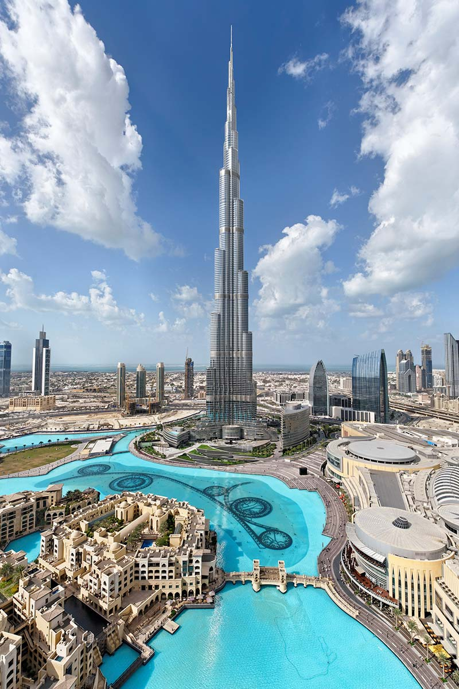

Burj Khalifa is the tallest building in the world and one of the most famous landmarks of Dubai, United Arab Emirates.
Standing at a height of 828 meters, it represents modern engineering, innovation, and the ambition of Dubai.
The skyscraper has a unique and beautiful design inspired by the shape of a desert flower called Hymenocallis.
It contains offices, luxury residences, hotels, restaurants, and observation decks that provide breathtaking views of the city.
Since its opening in 2010, Burj Khalifa has attracted millions of visitors from around the world and has become a symbol of progress and architectural excellence.
The construction of Burj Khalifa began in 2004 and was completed in 2009 by Emaar Properties.
It was designed by architect Adrian Smith and built using advanced engineering techniques to create a strong and stable structure.
The building has 163 floors and features one of the world's fastest elevators.
Besides being a tourist attraction, Burj Khalifa plays an important role in Dubai’s economy and shows the city's growth, creativity, and vision for the future.
Today, it stands as a remarkable achievement of human creativity and a global icon of modern architecture.
Burj Khalifa is famous because it is the tallest building in the world and a symbol of modern engineering and human achievement. Standing at 828 meters, it dominates the Dubai skyline and attracts millions of visitors every year. The tower is admired for its unique design, advanced technology, luxury facilities, and amazing views from its observation decks. It is also famous for its world records, including having the highest occupied floors and one of the fastest elevators in the world. Burj Khalifa represents Dubai’s growth, ambition, and vision of becoming a global center for tourism, business, and innovation. Its beautiful light shows and impressive architecture make it one of the most recognizable landmarks on Earth.
Burj Khalifa is famous because it is the tallest building in the world, with a height of 828 meters. It is known for its unique architecture, advanced engineering, and breathtaking views of Dubai. The tower is a symbol of innovation, luxury, and the growth of the United Arab Emirates.
Burj Khalifa was built to represent Dubai’s growth, innovation, and ambition. Its purpose is to serve as a major center for tourism, business, residential living, and entertainment. The tower helps attract millions of visitors from around the world and showcases advanced engineering and modern architecture. It also represents the vision of the United Arab Emirates to become a global leader in development, technology, and luxury.
Burj Khalifa is a masterpiece of modern architecture and engineering, designed by architect Adrian Smith. Its unique design is inspired by the shape of the desert flower Hymenocallis, giving it a strong and elegant structure. The building uses advanced engineering techniques, reinforced concrete, and glass panels to create a stable and beautiful skyscraper. It has a Y-shaped design that helps reduce wind pressure and provides wide views of Dubai. With 828 meters height and 163 floors, Burj Khalifa is considered one of the greatest achievements in modern architectural history.
Educational Travel Project
Explore the beauty, history, and architecture of one of the world's most amazing monuments.